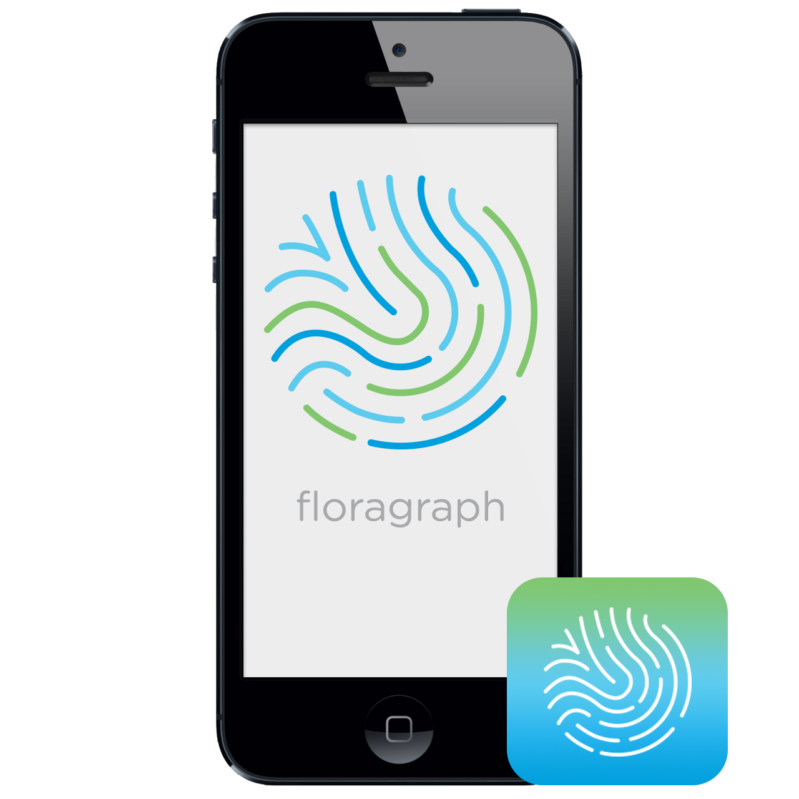
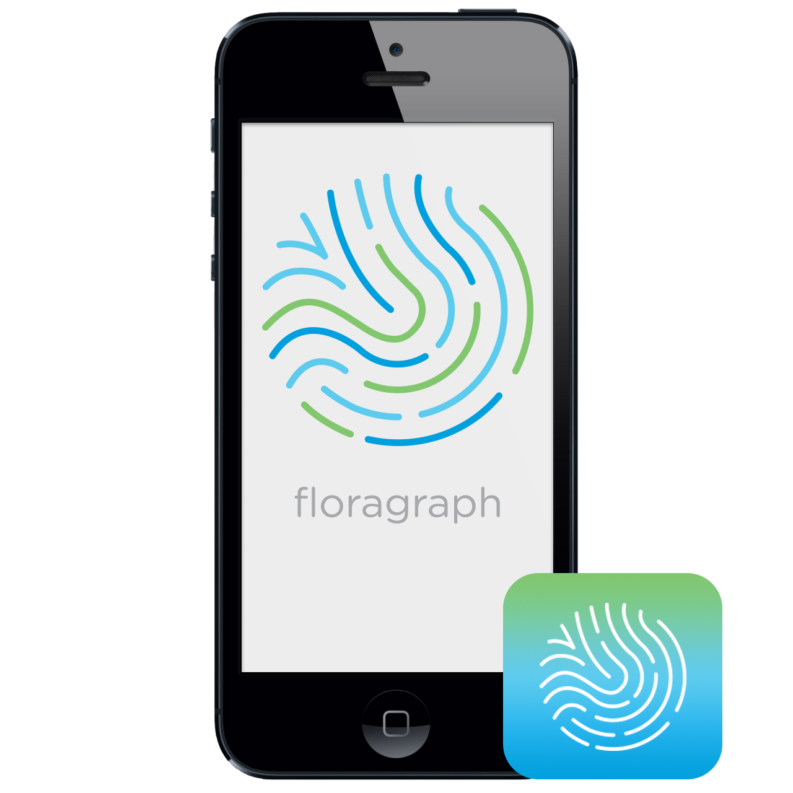

The group assignment was to develop a go-to-market strategy for Floragraph, an in-home, gut microbiome sequencing tool. This project was part of Miami University's San Francisco Digital Innovation co-op program.
Ultimately, a go-to-market presentation, logo, ad mockup, pitch deck, and website were created. My work included designing and compiling the pitch deck and final presentation as well as presenting at the capstone's end-of-year event.
The client especially appreciated the pitch deck for investors and was impressed with the broad scope of work completed.
 
